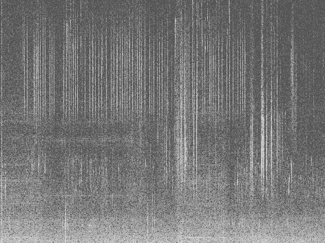
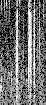

SOUND IS VISUALLY RICH There are many ways of visually representing sound waves. I use a device that records audio below the range of human hearing, exposing atmospheric frequencies usually taken for granted.
MECHANICAL AQUATINT Below is the spectrogram (plot of frequency bands over time) of a few second recording. Using a sample of this image, I can map tones of gray to dots-per-pixel, and recreate gray tones through plotter printing. Because the tones are printed by a plotter machine, and created using randomly distributed dots, it mimics the method of traditional air-dispersed resin aquatint for tonework.

